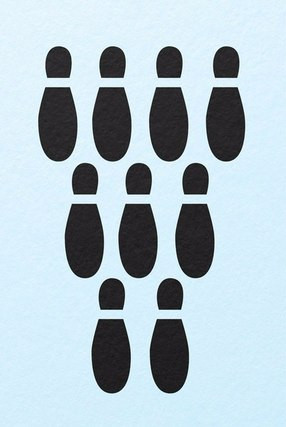

Что вы видите на картинке?
- Кегли
- Следы
- Матрешки
Ваш выбор рисунка говорит о том, что в отношениях с партнером вы предпочитаете равноправие. В сексе вам не нравится только доминировать или исключительно подчиняться. Вы – за то, чтобы инициатива переходила от одного партнера к другому.
Ваш выбор рисунка означает, что в сексе вы пассивны. Вам нравится полностью отдавать себя во власть своему партнеру, делать лишь то, что он от вас потребует, буквально растворяясь в нем.
Ваш выбор рисунка говорит о том, что вы требуете от партнера полного удовлетворения ваших желаний. Вы только берете, ничего не отдавая взамен. Вы эгоистичны в сексе.